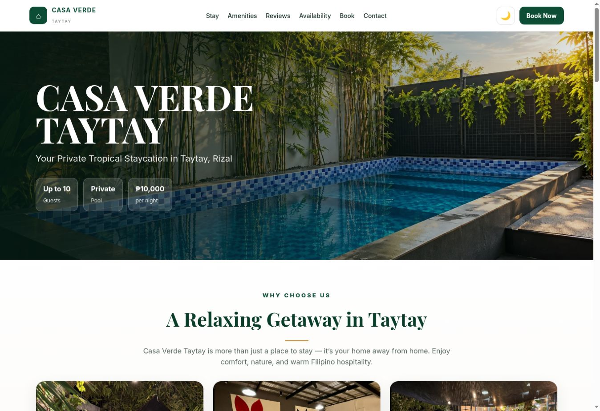
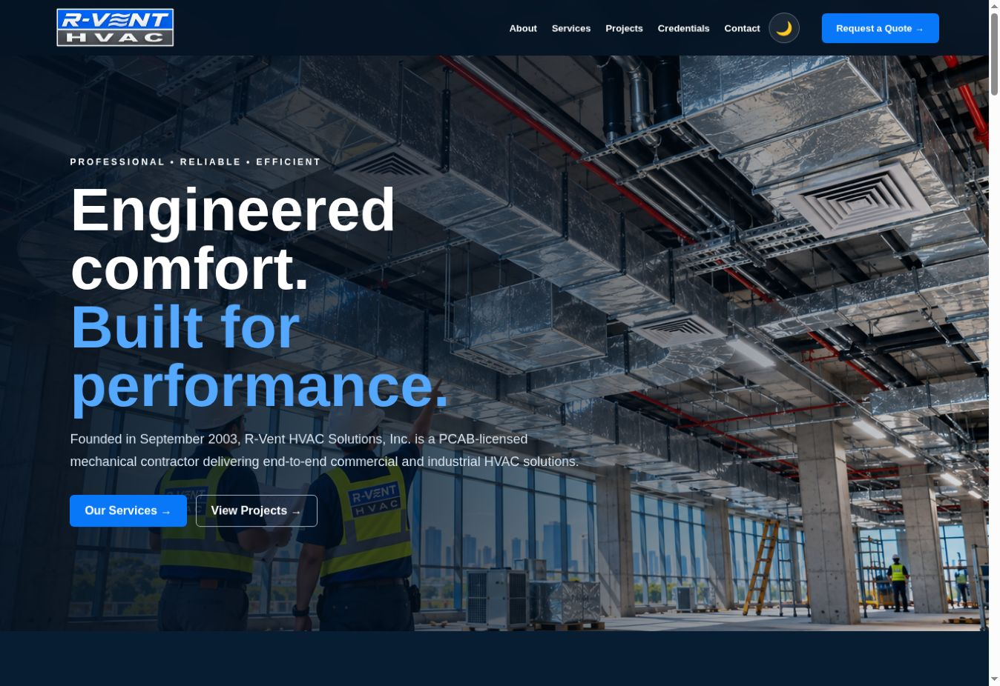

SELECTED WORK
Made with purpose.
Two completed websites. Explore the live work and see how each project supports its business.

2026 / HOSPITALITY WEBSITE
Casa Verde Taytay ↗
Property information, date-based pricing, and a reservation request experience for a private staycation business.
View project details ↗
2026 / COMPANY WEBSITE
R-Vent HVAC Solutions ↗
A company website with services, project experience, and a quote inquiry flow for an HVAC contractor.
View project details ↗BEHIND THE WORK